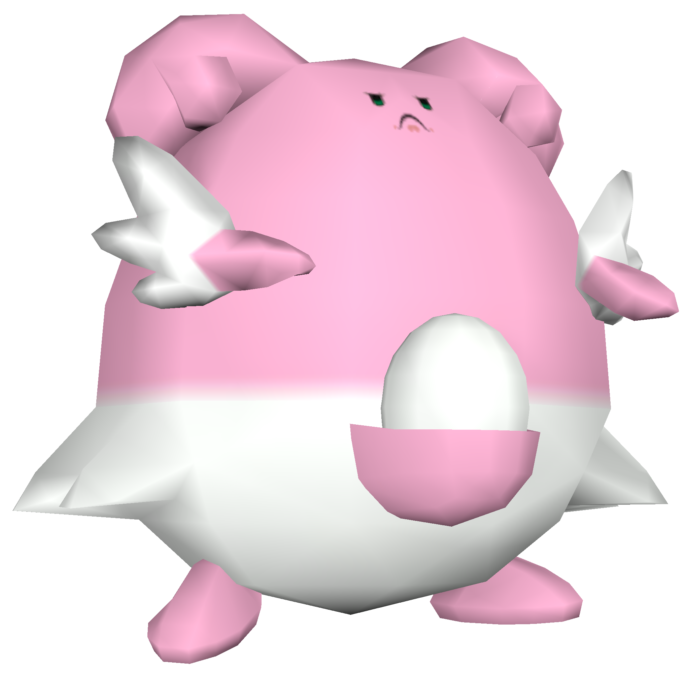
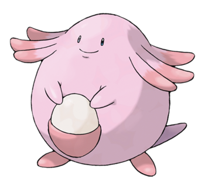
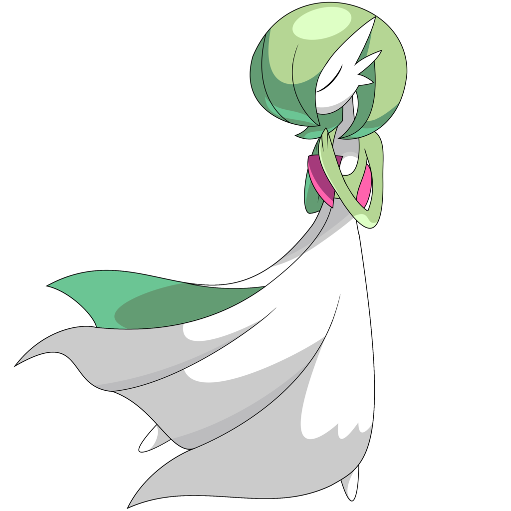
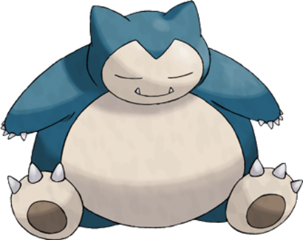

S-Rank

Blissey
When it comes to gym defense, Blissey is usually the first Pokémon that comes to mind. She boasts the highest HP stat in the whole game and is only weak to one type: Fighting. Blissey can learn Psychic and Dazzling Gleam which allows it take out Cross-Chop Machamp in a one-on-one battle. Needless to say, Blissey is a pain for any pro or novice player to fight. She is the only Pokémon fit for S-rank.
A-Rank

Chansey
Right under Blissey as the second best Gym defender is Blissey's first form, Chansey. As you'd expect, Chansey has the second highest HP stat in the game. She's good at stalling Gym battles but doesn't hit as hard as her fully evolved form, making her A-rank.

Gardevoir
Gardevoir is a defender with high Defense and Attack stats. She has access to STAB boosted Psychic and Fairy type attacks, making her pair well with Chansey and Blissey. Many Fighting types will fall quickly when put up against Gardevoir.

Snorlax
Snorlax is a Pokémon with very high HP and Defense, complemented by a respectable Attack stat. Snorlax doesn't have good coverage like Blissey or Gardevoir, but makes up for it with STAB boosted Body Slam and Hyper Beam.